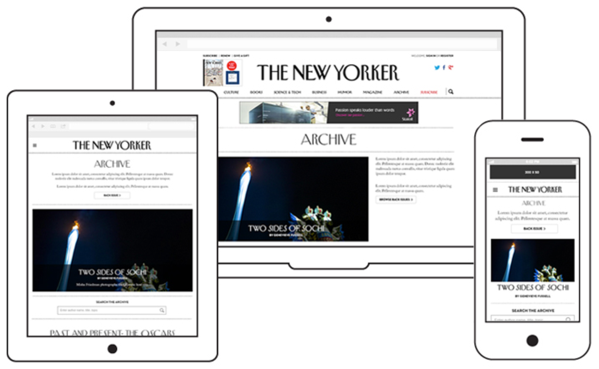
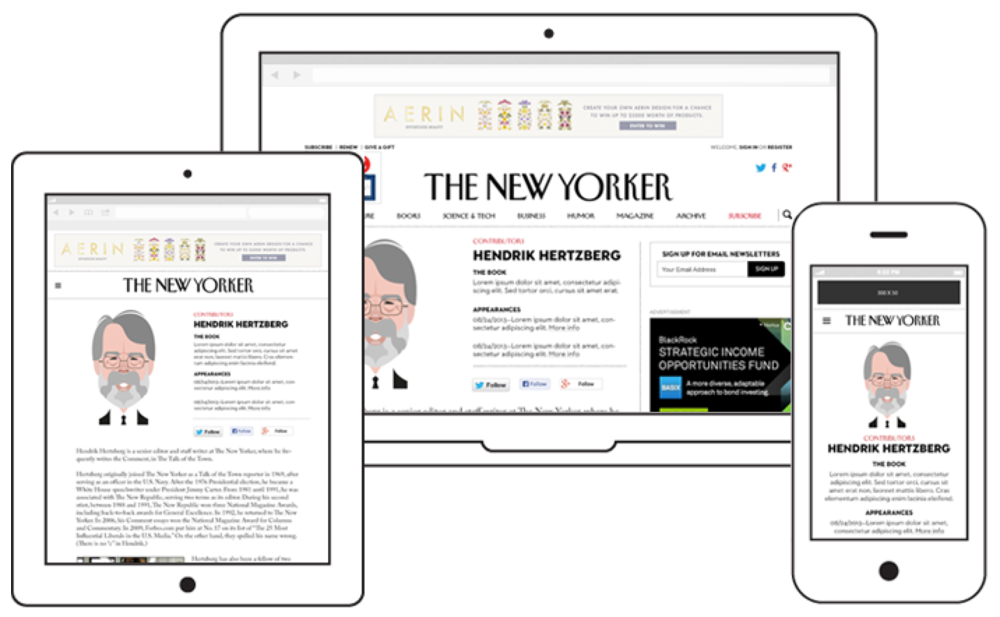

The New Yorker team had been working on a redesign for many months. They were building a new, fully responsive fluid site and were coordinating with the print creative team, as the redesign was across all media. I was asked to jump in and help the team finish up a few final sections of the website to ensure it launched on time.
{01} The Archive
The archive page needed to highlight past content in an organized way, allowing the editors to group the content as needed. Ads sales was also an important partner throughout the project.

{02} Contributor Pages
All article bylines link to the writer's contributor page. The contibutor pages give a brief bio on the writer and lists all of their contibutions from newest to oldest.
